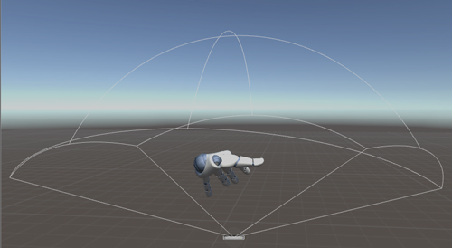

HandController¶
The HandController script is attached to the HandController prefab. The prefab serves as the anchor point for drawing hands. You can set the HandController properties, such as which hand prefabs to use, in the Inspector panel.

When you play the scene, any hands detected by the Leap Motion controller are drawn relative to the position and orientation of the prefab.
If your hand is 20cm above the Leap Motion device, the virtual hand is drawn 20cm above the prefab position (if the HandController transform scale is set to 1.0). Do note that the default scale is 1:20, so hands are drawn much larger than real-size. In the Unity Scene view, the approximate field of view of the Leap Motion sensors are shown.
The Controller object that instantiates hands and tools to represent the hands and tools tracked by the Leap Motion device.
HandController is a Unity MonoBehavior instance that serves as the interface between your Unity application and the Leap Motion service.
The HandController script is attached to the HandController prefab. Drop a HandController prefab into a scene to add 3D, motion-controlled hands. The hands are placed above the prefab at their real-world relationship to the physical Leap device. You can change the transform of the prefab to adjust the orientation and the size of the hands in the scene. You can change the HandController.handMovementScale property to change the range of motion of the hands without changing the apparent model size.
When the HandController is active in a scene, it adds the specified 3D models for the hands to the scene whenever physical hands are tracked by the Leap Motion hardware. By default, these objects are destroyed when the physical hands are lost and recreated when tracking resumes. The asset package provides a variety of hands that you can use in conjunction with the hand controller.
Public FunctionsPublic Membersvoid DestroyAllHands()Destroys all hands owned by this HandController instance.
string FinishAndSaveRecording()Saves the current recording to a new file, returns the path, and starts playback.
- Return
- string The path to the saved recording.
HandModel [] GetAllGraphicsHands()Returns a copy of the hand model list.
HandModel [] GetAllPhysicsHands()Returns a copy of the physics model list.
Frame GetFrame()Returns the latest frame object.
If the recorder object is playing a recording, then the frame is taken from the recording. Otherwise, the frame comes from the Leap Motion Controller itself.
Controller GetLeapController()Returns the Leap Controller instance.
float GetRecordingProgress()The current frame position divided by the total number of frames in the recording.
void IgnoreCollisionsWithHands(GameObject to_ignore, bool ignore = true)Turns off collisions between the specified GameObject and all hands.
Subject to the limitations of Unity Physics.IgnoreCollisions(). See .
bool IsConnected()True, if the Leap Motion hardware is plugged in and this application is connected to the Leap Motion service.
bool IsEmbedded()True, if the active Leap Motion device is embedded in a laptop or keyboard.
void PauseRecording()Stops playback or recording without resetting the frame counter.
void PlayRecording()Start getting frames from the LeapRecorder object rather than the Leap service.
void Record()Starts saving frames.
void ResetRecording()Discards any frames recorded so far.
void StopRecording()Stops recording or playback and resets the frame counter to the beginning.
bool destroyHands
If hands are in charge of Destroying themselves, make this false.
bool enableRecordPlayback
Set true to enable recording.
Vector3 handMovementScale
The scale factors for hand movement.
Set greater than 1 to give the hands a greater range of motion.
bool isHeadMounted
Set true if the Leap Motion hardware is mounted on an HMD; otherwise, leave false.
HandModel leftGraphicsModel
The GameObject containing graphics to use for the left hand or both hands if separateLeftRight is false.
HandModel leftPhysicsModel
The GameObject containing colliders to use for the left hand or both hands if separateLeftRight is false.
bool mirrorZAxis
Reverses the z axis.
bool recorderLoop
Whether to loop the playback.
float recorderSpeed
Playback speed.
Set to 1.0 for normal speed.
TextAsset recordingAsset
The file to record or playback from.
HandModel rightGraphicsModel
The graphics hand model to use for the right hand.
HandModel rightPhysicsModel
The physics hand model to use for the right hand.
bool separateLeftRight
Whether to use a separate model for left and right hands (true); or mirror the same model for both hands (false).
ToolModel toolModel
The GameObject containing both graphics and colliders for tools.